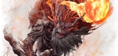

Los jefes son una de las partes más importantes en todo Sekiro, y aquí hablamos de la mayoría.Ya que hay bastantes y se repiten varios, así que solo se mencionaran los importantes.Se mencionarán algunos detalles como el nombre, fases, y un poco de la historia.Respecto a la historia, es tan grande y encima no se cuenta directamente por lo que recomendamos que la experiencie por su cuenta investigando.
Bosses
| Foto | Nombre | Más |
|---|---|---|
| Genichiro Ashina | Este enemigo te lo encuentras hasta tres veces en toda la historia,suele tener 2 fases y en la última utiliza una técnica de rayo.En la historia quiere a tu amo para obtener la inmortlidad. |
|
| Gran Shinobi | Te lo encuentras una vez en el juego, tiene 2 fases.Habla con tu amo para que se una a él,el lo rechaza y te hace elegir entre seguir o romper el Código de Hierro |
|
|  | Demonio del Odio | Tiene 3 fases y cada fase se vuelve bastante peor haciendote olvidar todo lo que has aprendido.Es el antiguo escultor consumido por las llamas del odio, transformandolo en un demonio. |
| Simio Guardián | Tiene 2 fases y otro encuentro opcional.Tras la primera fase resucita sin cabeza siendo menos predecible.Su misión es proteger un ingrediente para quitar la inmortalidad, una flor. |
|
| Monos del biombo | Son varios monos que ponen a prueba la inteligencia del jugador, cada uno tiene un comportamiento único. |
|
| Dragón Divino | Este jefe tiene 2 fases.Es un espectáculo visual, uno de los ingredientes para curar la inmortalidad y un dios. |
|
| Dama Mariposa | Tiene 2 fases y es opcional.Tiene hablidades ilusórias.Es uno de los ayudantes de Genichiro Ashina, quien busca la inmortalidad. |
|
| Monje | Tiene 3 fases y tiene otro encuentro opcional.Usa la teletransportación y usa ataques de miedo.Esta infectado por los cienpiés. |
|
| Gyobu Masataka Oniwa | Tiene 2 fases y utiliza un caballo y una lanza.Tiene atques muy seguidos.Es otro de los ayudantes de Genichiro Ashina. |
|
| Isshin Ashina | Este jefe se divide en dos:Primero Genichiro ,su nieto, con 2 fases y después Isshin el abuelo rejuvenecido y con la espada mortal ,3 fases. |